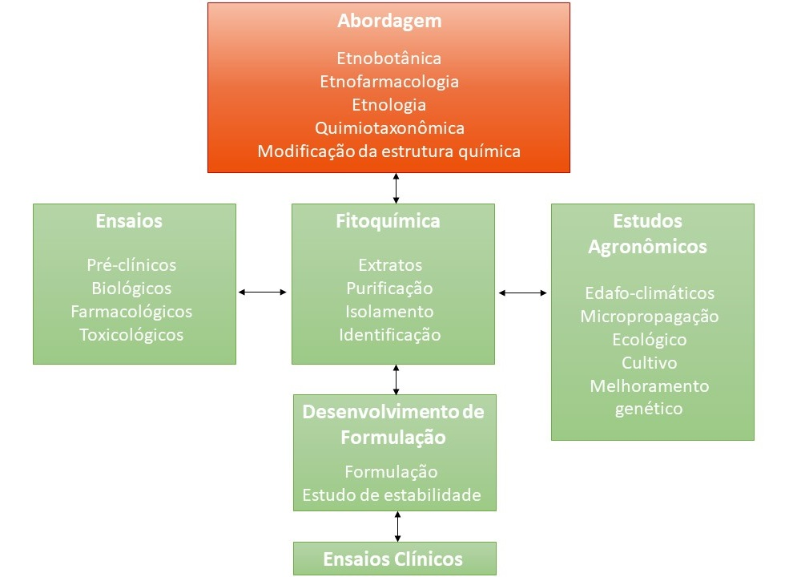
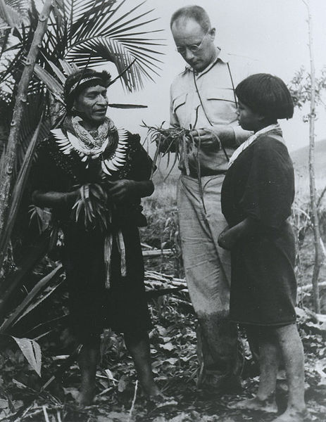

Dados da literatura indicam que 75% dos compostos naturais empregados pela indústria farmacêutica foram isolados a partir de informações de uso popular o que demonstra a importância dos levantamentos etnobotânicos e etnofarmacológicos na descoberta de novos medicamentos (ALBUQUERQUE e HANAZAKI, 2006).
A etnofarmacologia baseia-se em coleta informações de utilidade terapêutica, o que em tese indicaria a possibilidade de interação com um determinado alvo biológico. Portanto estudos etnofarmacológicos e etnobotânicos podem constituir valioso atalho para descoberta de novos medicamentos, já que o uso tradicional pode ser considerado como uma pré-triagem quanto à utilidade terapêutica.
Dentre as limitações destes estudos podemos citar:
- Dificuldade de coletar informações fidedignas do entrevistado;
- Associação do uso das plantas a componentes mágico-religiosos;
- Existência de questões étnicas e éticas que envolvem o acesso ao conhecimento tradicional associado ao uso da biodiversidade, que devem seguir a legislação vigente (Lei nº 13.123 de 2015).
As informações botânico-taxonômicas, químico-taxonômicas e farmacológicas fornecem informações sobre a parte da planta que deve ser estudada e como deve ser utilizada para a ação desejada.
Como a constituição química varia em relação às partes da planta, inicia-se o estudo de pesquisa da planta, evidenciando as análise das partes empregadas na medicina tradicional para em seguida passar-se aos testes das outras partes da planta que, também, poderão apresentar atividade terapêutica.

É o uso alicerçado no longo histórico de utilização no ser humano demonstrado em documentação técnico científica, sem evidências conhecidas ou informadas de risco à saúde do usuário. Ex.: o uso das folhas de eucalipto (Eucalyptus globulus Labill.) como antisséptico das vias aéreas superiores e como expectorante, por comunidades tradicionais.
São as informações relacionadas à identificação, descrição, nomenclatura e classificação das espécies vegetais.
São informações relacionadas à composição química e bioquímica das espécies vegetais.
Refere-se ao conjunto de práticas em Saúde desenvolvidas antes do que se classifica como medicina moderna (ou convencional) e que ainda hoje são praticadas por diversas culturas em todo o mundo.
{kind=link}